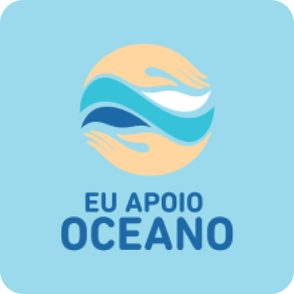

Oceanos, vibrantes e cheios de vida, estão agora em perigo iminente. Uma inundação de plástico e poluentes tóxicos os sufoca, enquanto práticas de pesca insustentáveis esgotam seus recursos.

O AquaSense foi desenvolvido, visando a preservação dos oceanos.
Consiste em um sistema Iot, que monitora a qualidade da água, detectando variações e promovendo conservação
O sistema faz o monitoramento de:
- pH
- Temperatura
- Salinidade
- Oxigênio
Nosso Objetivo:
- Monitorar Qualidade da água em diversas regiões marítimas.
- Contribuir com a proteção e conservação dos ecossistemas aquáticos.
- Identificar variações na composição da água, compromentendo sua qualidade.
- Fornecer informações precisas e atualizadas.
